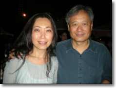
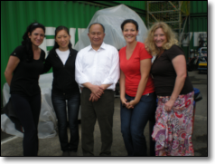

 Janice & Ang Lee.
 Tricia, Janice, John Woo, Tina, Cindy.
Janice’s compositing career started with a solid art background as a graphic designer. She worked in the digital compositing field for film and television in Los Angeles for many years. She has worked in facilities such as Rhythm & Hues, DRez, and Digiscope, with systems from Quantel Domino to Avid Illusion and Shake and has experience handling client-attended sessions with film directors and producers. Her movie credits can be viewed on IMDB website.
While working as a compositor in Hollywood and Los Angeles, Janice taught an After Effects class for film students at the University of Southern California and conducted Domino training on-site in Hong Kong and Hollywood.
After a hiatus from compositing to pursue a master degree in Traditional Chinese Medicine for personal fulfillment, she contributed to the re-design of the user interface for Nuke 5 when The Foundry took over its development from Digital Domain in 2007. While she lived in Hong Kong afterwards she spent her time doing occasional Nuke demos for The Foundry in Asian countries and conducting authorized (by a then Foundry authorized Nuke training center in Hong Kong) and private Nuke training courses.
She moved back to London in October 2010 but soon afterwards got an opportunity to work on Ang Lee’s new production - Life of Pi, in Taiwan. During which time she worked in the Visual Effects Department assisting their Stereo Consultant in visualizing stereo effects theories for special effects and test-comp some live problematic shots.
After Life of Pi Janice returned to London and continued to work as a compositor, bouncing back and forth between Framestore’s Commercial Department and Cinesite, working on various film and commercial projects, which included stereo conversion of John Carter and World War Z, 4K Sony Bravia commercial, Skyfall title sequence, and 3D compositing for Hummingbird.
Timing was right when an opportunity came in late 2013 to work at Escape Studios in the capacity of compositing tutor and courseware developer. She taught in-class as well as on-line courses; updated and consolidated compositing courseware, paving the road for future degreed programs; represented Escape Studios in mentoring and evaluating students’ programs in a couple of universities as part of the EU funded Skill Set program; and supported other remote tutors.
In 2015 Janice spent six-month in Bangalore, India, working for MPC Advertising as a Compositing Trainer. She returned to Los Angeles afterwards and has been working as a Nuke compositor for MPC LA.